lecture.13.html
Lecture 13: Real-time scheduling
NOTE: Not relevant for the exam.
Real-time computer systems
- What’s this all about?
A real-time computer system is a computer system in which the correctness of the system behavior depends not only on the logical results of the computations, but also on the physical instant at which these results are produced.
Example: inverted pendulum
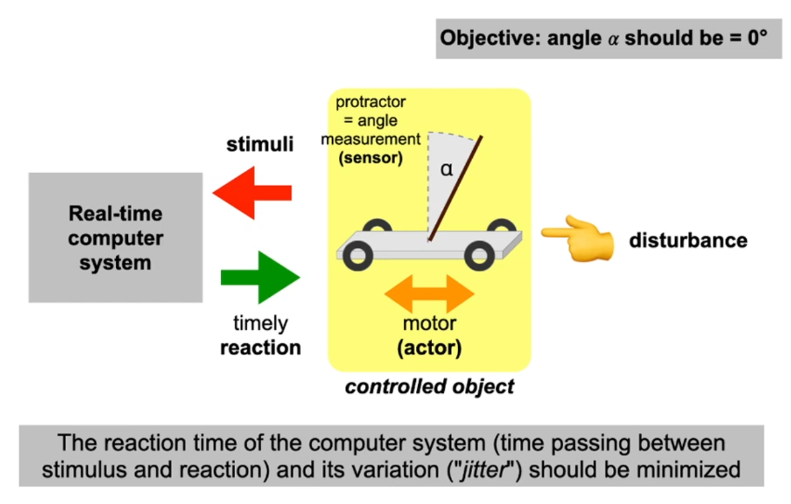
Deadlines
- Often defined by the technical system to be controlled
- Deadline classification:
- soft: the obtained result (the reaction of the system) is useful even if it was obtained after the deadline has passed
- firm: the result is useless after the deadline has passed
- hard: if the deadline passes without a system reaction, damage can occur
- A real-time system is considered "hard" if at least one of its deadlines is hard. Otherwise, the system is "soft"
- For hard real-time systems, it has to be guaranteed that all deadlines are kept. This requires different development approaches and system structures.
How long does a program run?
- Runtimes of programs vary due to:
- different inputs
- hardware states when the program starts
- interrupts, process switching, power management, …
- Especially relevant: Worst Case Execution Time (WCET)
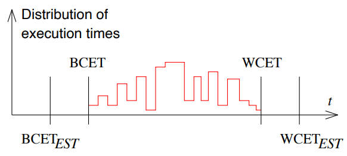
The estimated WCETEST has to be guaranteed larger or equal to the real WCET. However, the difference between the two should be as small as possible ("tight bounds").
Trigger
… to initiate computation ("task") can be realized in different ways:
Event-triggered real-time systems
- A relevant change of the state of the controlled object (an event) was observed via sensor readings
- Scheduling of the tasks at runtime
- High overhead for tests under high load
- Behavior is difficult to predict → soft real-time systems
Time-triggered real-time systems
- Fixed points in time to execute calculations are planned in advance (offline scheduling). Their execution is periodic
- Resource utilization is higher than with event-triggered systems, since the calculation always has to consider the worst case execution time (WCET)
- High energy consumption since the system is permanently active
- Lower test effort required
- Guarantees are possible → hard real-time systems
Example: OSEKtime
Objectives of the OSEKtime OS [2]:
- Safe realization of "x-by-wire" applications, e.g. fly-by-wire, steer-by-wire, brake-by-wire, eGas
- Guaranteed predictable behavior
- support for time-triggered applications → OSEKtime operating system specification (version 1.0: 2001)
- Global coordination of embedded control units (ECUs):
- global time! → FTCom specification
- Guaranteed predictable behavior
- Compatibility with "classical" OSEK-OS tasks
- Support for event-driven applications
OSEKtime scheduler
- Offline scheduling :
- A dispatch table controls the periodic activation of tasks:
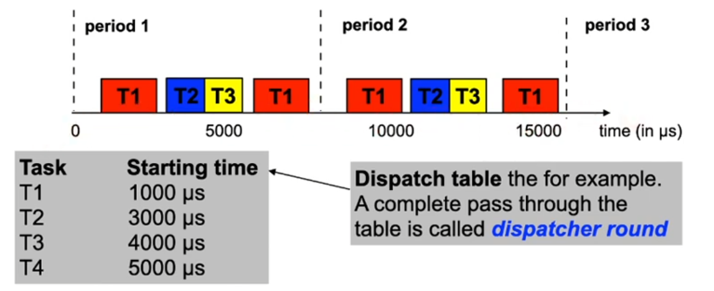
- The dispatcher is invoked by a timer interrupt
- Only the dispatcher can activate tasks
- Safety mechanism: deadline monitoring
Offline scheduling
- Tools support developers when scheduling tasks at design time
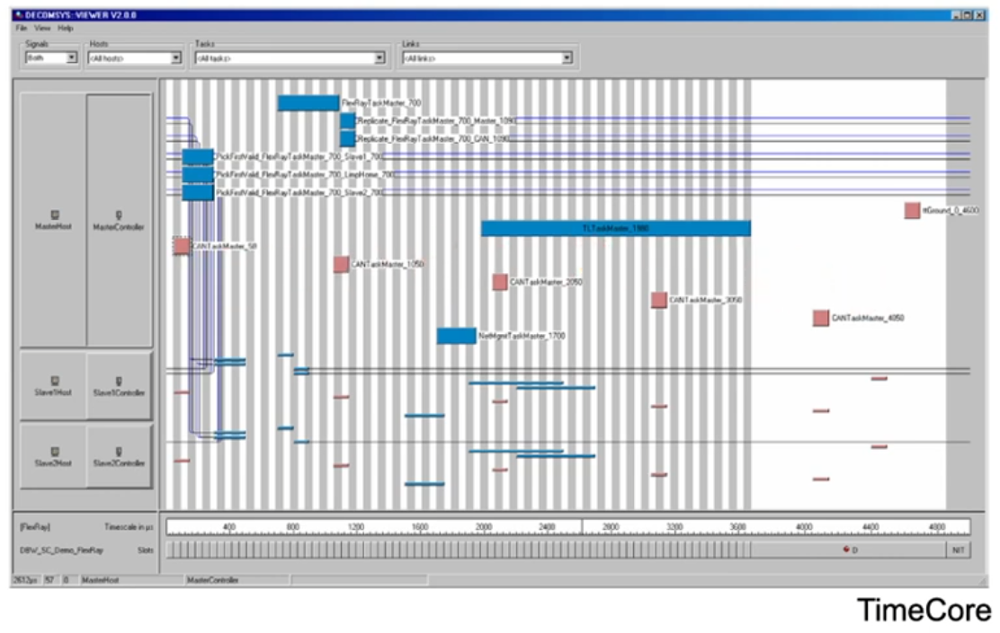
Real-time scheduling
- Objective: obtain guarantees that hard deadlines are kept
- Taxonomy of scheduling approaches [3, chapter 6]:
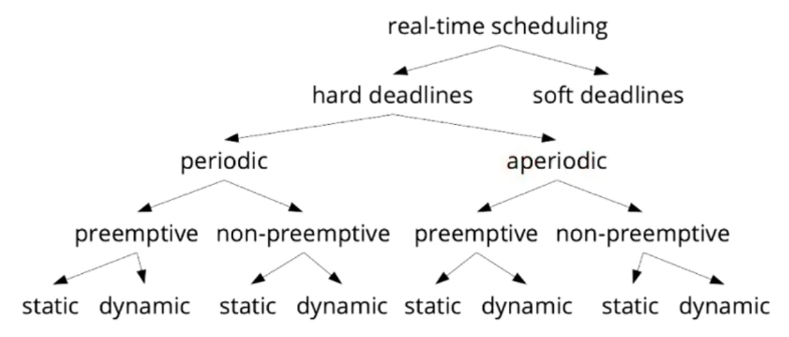
Rate-monotonic scheduling (RM)
- Rate-monotonic (RM) scheduling is a scheduling strategy for preemptive, periodic tasks with hard deadlines
- The scheduler works at runtime (using fixed priorities)
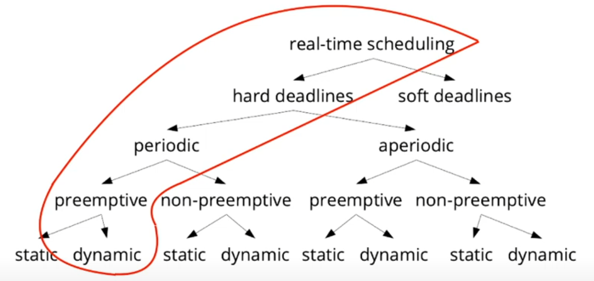
RM assumptions (Liu & Layland 1973)
- A1. All tasks are preemptible at any time
- Preemption costs (duration) are negligible
- A2. Only compute time is a relevant resource
- The overhead for memory, I/O accesses and other resources is negligible
- A3. All tasks are independent
- There is no required order of execution between tasks
- A4. All tasks are periodic
- A5. The relative deadline of a task is equal to its period
Example: car headlight controller
... everything is periodic! 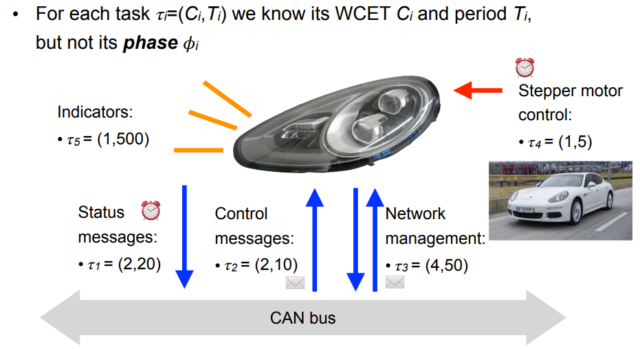
RM algorithm
- The priority grows monotonously with the event rate (=frequency)
- Thus: short period → high priority
- Tasks with high priority preempt tasks with low priority
- Example:
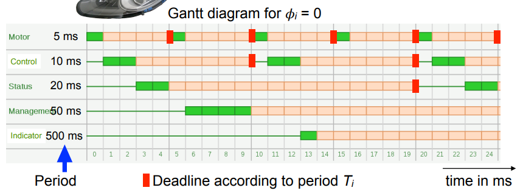
A practical implementation of RM scheduling requires only an operating system with a preemptive fixed priority scheduler
Schedulability analysis
- Question: are the deadlines kept for all tasks?
- The schedule can only be calculated if all tasks are completely time-triggered. In our example, the phases can have arbitrary values
- Necessary condition: the utilization U of the system is less than or equal to 1:
U: system load, m: number of tasks But is this sufficient?
The "70% rule"
- Rule: no deadline violations if the following condition holds:
- For large values of m, this converges against ln(2) ≈ 0,6931, i.e. ca. 70%
- Advantage: simple test, low overhead
- Example 1: U = 58.2%, m = 5
- m·(21/m-1) = 74.35%, condition fulfilled → no deadline violation
- Example 2: 𝜏1 = (2,5) instead of 𝜏1 = (1,5), thus U = 78.2%, m = 5
- m·(21/m-1) = 74.35%, condition not fulfilled → possible deadline violation
- Disadvantage: no conclusion if the condition is not fulfilled
Sufficient and necessary conditions
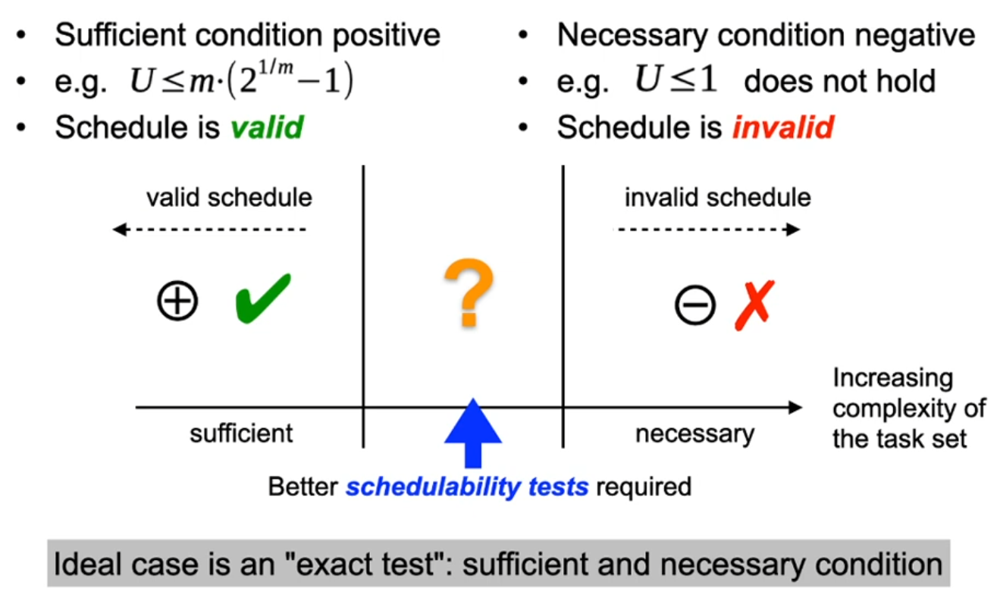
Exact test: response time analysis
- If the response time Ri for all tasks is less than or equal to the period Ti, all deadlines are kept
- Necessary and sufficient conditions:
- For the largest possible delay 𝜙i = 0: All higher prioritized tasks are ready at the start of the period
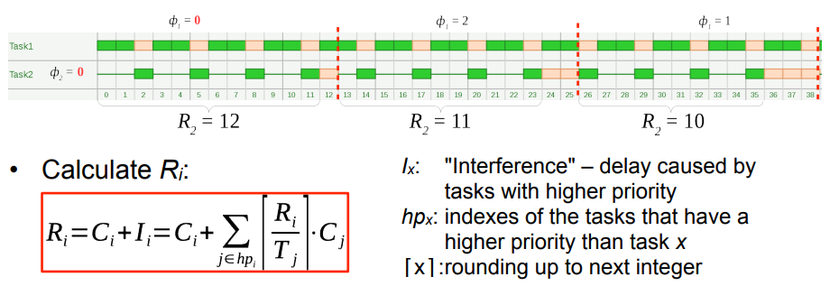
Exact test: iterative solution
- Calculate Ri using fixed point iteration:
- Terminate if or
- Pseudo code of the tests for all tasks:
for (each task 𝜏i) {
I = 0
do {
R = I + Ci
if (R > Ti) return false // deadline violation
I = <formula>
} while (I + Ci > R)
}
return true // all deadlines are kept
Rate-monotonic scheduling is "optimal"
- We need to show:
- RM is an optimal scheduling algorithm for fixed priorities. I.e., if any algorithmus can find a valid schedule, RM can also find one.
- Proof by contradiction: we assume… algorithm A finds a valid schedule, but RM does not
- In schedule A: prio(𝜏i) = prio(𝜏j) + 1 and Ti > Tj (different to RM) Ci+Cj ≤ Tj holds since the schedule is valid and 𝜏i has a higher priority
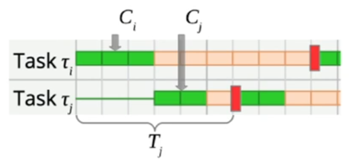
What is the effect of swapping the priorities (only) of these two tasks? 𝜏j can be scheduled, since it now has higher priority. 𝜏i can also be scheduled since Ci + Cj ≤ Tj < Ti. 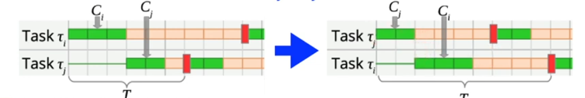
We obtain an RM schedule by applying a finite number of these swaps. This is also a valid schedule → contradiction → RM is optimal!
RM scheduling: conclusion
- RM is easy to apply and optimal for fixed priorities
- the OS only needs to provide a "fixed priority" scheduler
- Response time analysis enables an exact schedulability test
- Important for hard real-time systems: mathematical guarantee!
- In many cases, the 70% rule is sufficient
- Attention:
- Assumptions A.1-5 must hold!
- uniprocessor, no task dependencies, …
- WCET estimation difficult for modern processors
- memory hierarchies, out-of-order execution, DRAM access times, ...
- In any case, the complete system has to be analyzed
- Assumptions A.1-5 must hold!
Example: Earliest Deadline First
- Earliest Deadline First (EDF) scheduling is a scheduling strategy for preemptive, periodic and aperiodic tasks with hard deadlines. The priorities are assigned dynamically (at runtime).
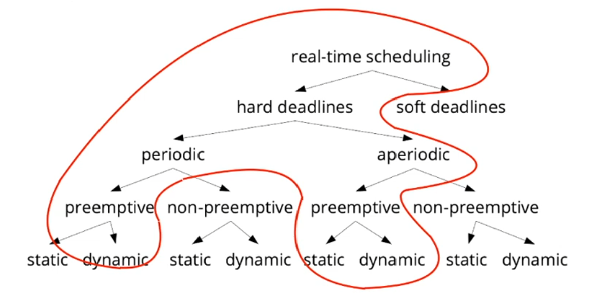
EDF algorithm
- Tasks which are ready are sorted in order of their absolute deadlines
- If the first task in the list has an earlier deadline than the currently running task, the running task is preempted immediately!
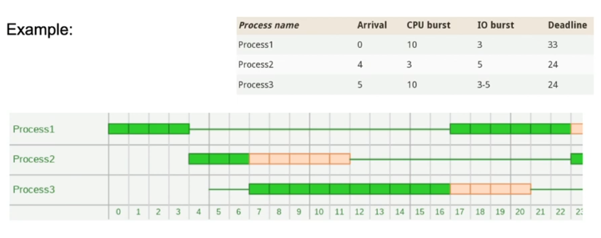
Optimality of EDF
- EDF minimizes the maximum delay of tasks
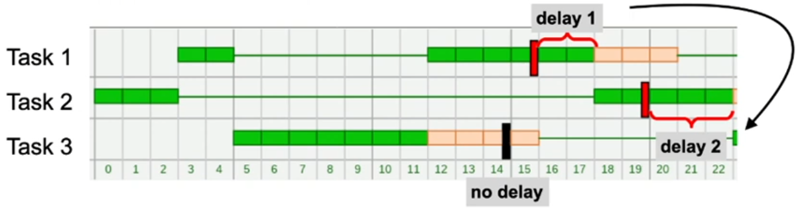
- If a schedule exists which is able to keep all deadlines, then EDF also keeps all deadlines → EDF is optimal
- …for independent tasks with dynamic priorities
- Especially for periodic tasks the following holds: If U ≤ 1, then EDF always finds a valid schedule (without missing deadlines!)
EDF-Scheduling: Conclusion
- Simply optimal for periodic as well as aperiodic task sets
- Achieves a higher utilization than RM scheduling by using dynamic priorities
- Attention:
- EDF is usually only implemented in special real-time operating systems
- No information about the number and duration of deadline misses can be obtained
- Less predictable than e.g. RM
- Response times can vary significantly: "jitter"
- In overload situations: "domino effect"
Outlook: Extending the strategies
- Working with sporadic tasks
- Limited arrival rate, but no strict period
- Consideration of task dependencies
- Increase CPU utilization
- mixed-criticality systems
- restriction to "harmonic tasks"
- periods are integer multiples of each other
- Modus changes
- e.g. indicator/stepper motor becomes active
- Handle [temporary] overload
- Adaptation to [heterogeneous] multiprocessor systems